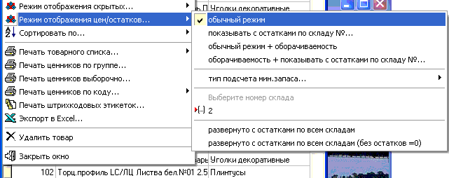
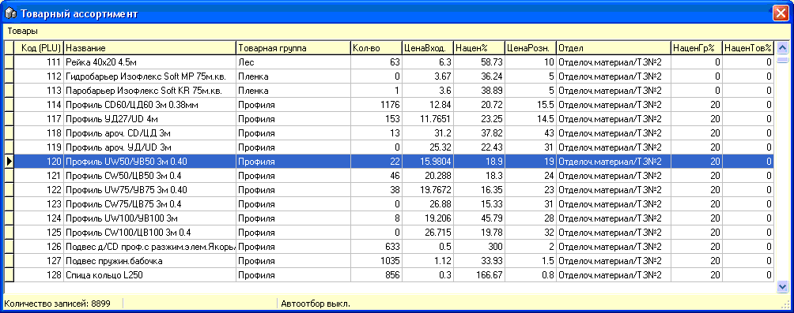
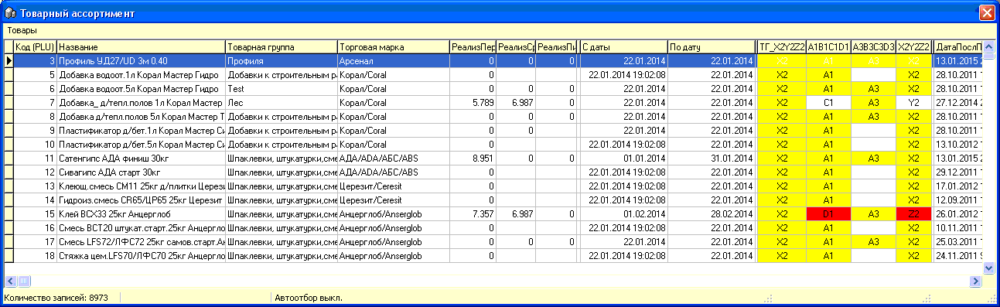

Режим отображения цен/остатков...

Данная функция предназначена для вывода дополнительной информации о товаре в справочнике товаров.
Для пунктов отображения отбирающих остатки и цены товара из партий, требуется указать номер склада, по которому они будут отбираться.
Ниже приведены примеры отображения данного справочника в некоторых режимах.

"Показывать с остатками по складу №..."
уцкуцкуц
"Обычный режим + оборачиваемость"